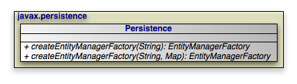

Table of Contents
|  |
OpenJPA also includes the
OpenJPAPersistence helper class to provide
additional utility methods.
Within a container, you will typically use injection to
access an EntityManagerFactory. Applications operating
of a container, however, can use the
Persistence class to obtain
EntityManagerFactory objects in a vendor-neutral fashion.
public static EntityManagerFactory createEntityManagerFactory(String name); public static EntityManagerFactory createEntityManagerFactory(String name, Map props);
Each createEntityManagerFactory method searches the
system for an EntityManagerFactory definition with the
given name. Use null for an unnamed factory. The optional map
contains vendor-specific property settings used to further configure the
factory.
persistence.xml files define
EntityManagerFactories. The createEntityManagerFactory
methods search for persistence.xml files
within the META-INF directory of any CLASSPATH
element. For example, if your CLASSPATH contains
the conf directory, you could place an
EntityManagerFactory definition in
conf/META-INF/persistence.xml.
The persistence.xml file format obeys the following
Document Type Descriptor (DTD):
<!ELEMENT persistence (persistence-unit*)> <!ELEMENT persistence-unit (description?,provider?,jta-data-source?, non-jta-data-source?,(class|jar-file|mapping-file)*, exclude-unlisted-classes?,properties?)> <!ATTLIST persistence-unit name CDATA #REQUIRED> <!ATTLIST persistence-unit transaction-type (JTA|RESOURCE_LOCAL) "JTA"> <!ELEMENT description (#PCDATA)> <!ELEMENT provider (#PCDATA)> <!ELEMENT jta-data-source (#PCDATA)> <!ELEMENT non-jta-data-source (#PCDATA)> <!ELEMENT mapping-file (#PCDATA)> <!ELEMENT jar-file (#PCDATA)> <!ELEMENT class (#PCDATA)> <!ELEMENT exclude-unlisted-classes EMPTY> <!ELEMENT properties (property*)> <!ELEMENT property EMPTY> <!ATTLIST property name CDATA #REQUIRED> <!ATTLIST property value CDATA #REQUIRED>
The root element of a persistence.xml file is
persistence, which then contains one or more
persistence-unit definitions. Each persistence unit describes the
configuration for the entity managers created by the persistence unit's entity
manager factory. The persistence unit can specify these elements and attribtues.
name: This is the name you pass to the
Persistence.createEntityManagerFactory methods described above. The
name attribute is required.
transaction-type: Whether to use managed
(JTA) or local (RESOURCE_LOCAL)
transaction management.
provider: If you are using a third-party JPA vendor, this
element names its implementation of the
PersistenceProvider bootstrapping interface.
Set the provider to
org.apache.openjpa.persistence.PersistenceProviderImpl to use
OpenJPA.
jta-data-source: The JNDI name of a JDBC
DataSource that is automatically enlisted in JTA transactions. This
may be an XA DataSource.
non-jta-data-source: The JNDI name of a JDBC
DataSource that is not enlisted in JTA transactions.
mapping-file*: The resource names of XML mapping files for
entities and embeddable classes. You can also specify mapping information in an
orm.xml file in your META-INF
directory. If present, the orm.xml mapping file will be
read automatically.
jar-file*: The names of jar files containing entities and
embeddable classes. The implementation will scan the jar for annotated classes.
class*: The class names of entities and embeddable classes.
properties: This element contains nested property
elements used to specify vendor-specific settings. Each
property has a name attribute and a value attribute.
The Reference Guide's Chapter 2, Configuration describes OpenJPA's configuration properties.
Here is a typical persistence.xml file for a non-EE
environment:
Example 6.1. persistence.xml
<?xml version="1.0"?>
<persistence>
<persistence-unit name="openjpa">
<provider>org.apache.openjpa.persistence.PersistenceProviderImpl</provider>
<class>tutorial.Animal</class>
<class>tutorial.Dog</class>
<class>tutorial.Rabbit</class>
<class>tutorial.Snake</class>
<properties>
<property name="openjpa.ConnectionURL" value="jdbc:hsqldb:tutorial_database"/>
<property name="openjpa.ConnectionDriverName" value="org.hsqldb.jdbcDriver"/>
<property name="openjpa.ConnectionUserName" value="sa"/>
<property name="openjpa.ConnectionPassword" value=""/>
<property name="openjpa.Log" value="DefaultLevel=WARN, Tool=INFO"/>
</properties>
</persistence-unit>
</persistence>